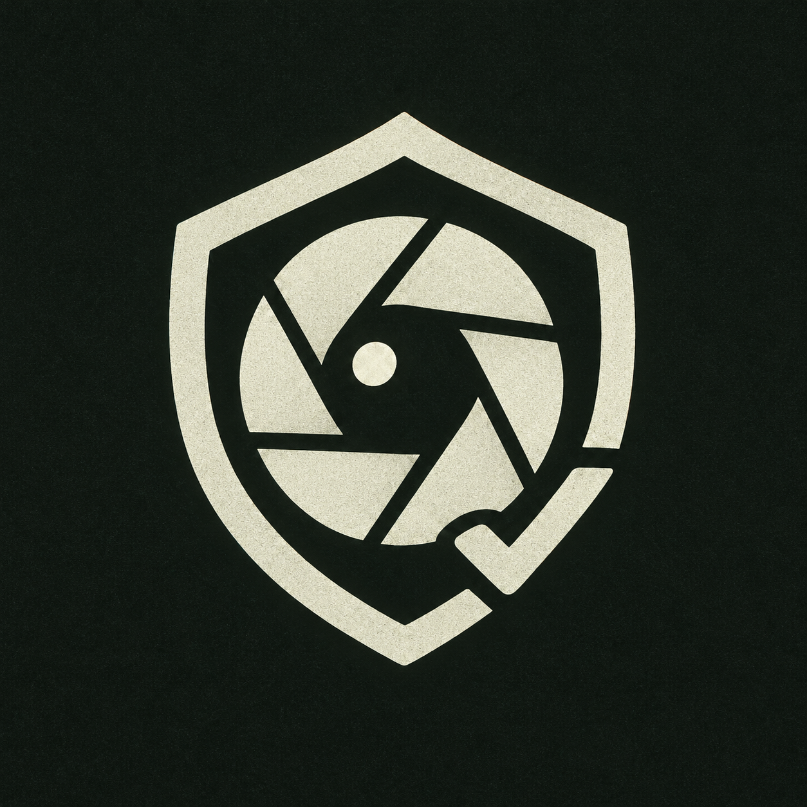

CredLens AICredLens AI uses Attestcoin-verified onchain activity to convert cross-chain wallet behavior into an interpretable trust signal for lending, compliance, and protocol access decisions.
Onchain ecosystems have strong transparency but weak portable trust. Wallet history is fragmented across networks, raw transactions are difficult to interpret quickly, and many credit or access decisions still rely on shallow heuristics. CredLens AI addresses this gap with a lightweight trust scoring layer that verifies wallet-linked activity, analyzes behavior, and returns a clear risk label backed by an auditable attestation trail.
Web3 users increasingly operate across multiple chains, wallets, bridges, and applications, yet trust assessment remains primitive. Existing approaches often depend on single-chain views, vanity metrics, or manual review. This creates friction for lenders, grant programs, OTC counterparties, compliance teams, and applications that need a fast signal of whether a wallet appears credible, risky, or unknown.
The core challenge is not a lack of data. The challenge is transforming noisy, fragmented wallet activity into a signal that is both useful and defensible. Decision-makers need a way to verify that an analyzed wallet event is real, trace how a score was produced, and interpret the output without reading raw chain data.
CredLens AI is a trust scoring application that accepts a verified transaction reference, links it to a wallet, analyzes wallet-related activity, and returns a structured result containing verification status, chain provenance, a numeric score, a stored score, a risk label, and registry metadata. The result is designed for both human review and downstream machine use.
The user interface is a vanilla HTML, CSS, and JavaScript application deployed on GitHub Pages. It provides a clean submission flow, displays live result cards, and surfaces the fields judges need to inspect quickly during a hackathon demo.
The backend is a Node and TypeScript service deployed on Render. It handles verification, scoring, and response formatting without requiring a heavyweight framework. This keeps the MVP compact, transparent, and easy to reason about.
CredLens AI depends on attestation-backed evidence rather than unaudited claims. Verification is central because trust scores are only useful when the underlying event can be tied to real onchain activity.
The system returns registry metadata alongside the score, allowing a reviewer to inspect not only the verdict but also the transaction context associated with the stored result.
The current MVP focuses on a compact and interpretable trust signal rather than a high-dimensional opaque model. Scores are intended to summarize wallet credibility indicators into a format that can be read in seconds. The design principle is simple: a useful trust score should be verifiable, explainable, and operationally cheap to compute.
As the project matures, the scoring engine can expand to include richer cross-chain behavioral features, reputation weighting, historical consistency checks, Sybil resistance signals, and model-calibrated confidence bands. The MVP intentionally prioritizes legibility over excessive complexity.
These limitations are a feature of honest product framing. CredLens AI is positioned as an auditable trust signal for experimentation and early workflow support, not as a final authority on financial risk.
The long-range opportunity is portable wallet credibility: a reusable trust layer that helps applications assess counterparties without sacrificing transparency.
DeFi and onchain applications need better trust infrastructure. Fully manual review does not scale, and opaque black-box scoring introduces its own risks. CredLens AI sits in the middle: it uses verified onchain evidence, produces a compact score, and returns an auditable record that people can understand. That balance is what makes it suitable for real product workflows.
This whitepaper reflects the current hackathon MVP as of 2026-09-10. It documents the product direction, deployed demo architecture, and trust model intent. It should be read as a technical and product overview for judges, collaborators, and early integrators.